An implementation of chartjs for R.
Still in it’s infancy .. still working out the API and function logic
So far including
- chart types - bar (+stack, +horizontal), scatter (+line), doughnut/pie
- axis scales - numeric, category, time …
- shape/colour/size scales
- theme control
- add plugins
- basic shiny
- tools tips
- still much todo … more shiny
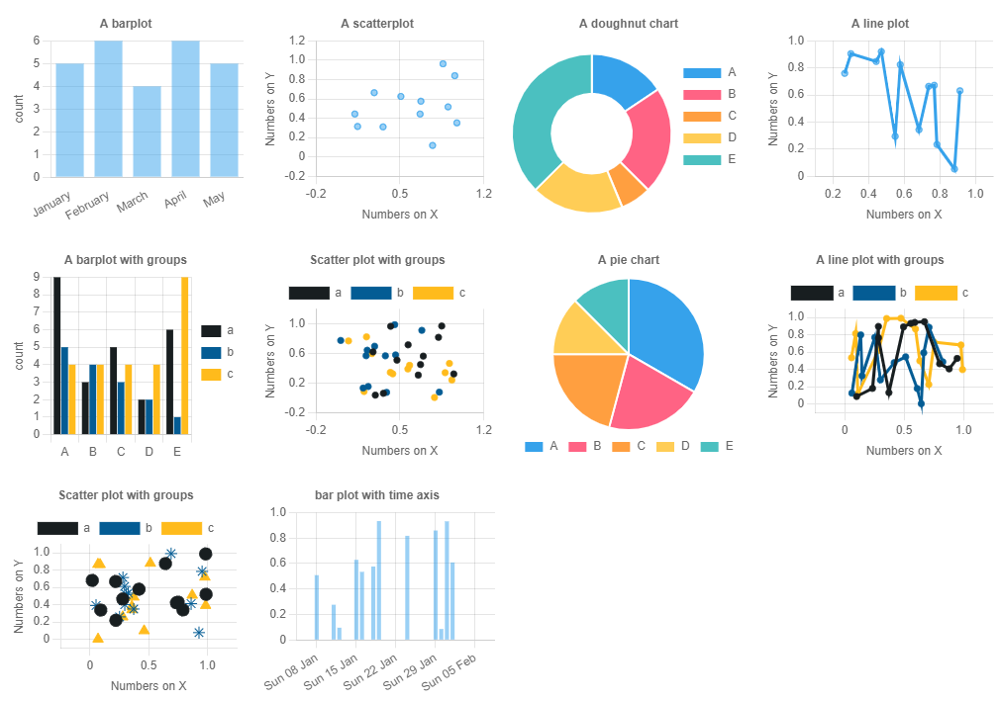
plot gallery
Installation
# install.packages("devtools")
devtools::install_github("Shaunson26/chartjs4R")
library(chartjs4r)Examples
See
vignette(package = 'chartjs4r')‘live’ and deeper examples … only screenshots are presented for the GitHub README ..
Inputs can be a list of options as initialized in chartjs javascript, or a data.frame. The latter of which this package essentially builds the former.
A list of chartjs options
cjs_list_input_example()
#> $type
#> [1] "bar"
#>
#> $data
#> $data$labels
#> [1] 1 2 3 4
#>
#> $data$datasets
#> $data$datasets[[1]]
#> $data$datasets[[1]]$label
#> [1] "dataset 1"
#>
#> $data$datasets[[1]]$data
#> [1] 1 4 3 2
#>
#>
#>
#>
#> $options
#> $options$maintainAspectRatio
#> [1] FALSE
#>
#> $options$resizeDelay
#> [1] 250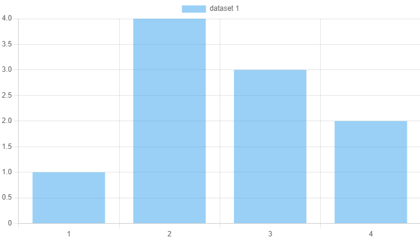
Barplots
cjs_example_data('bar') %>%
chartjs(type = 'bar', x = letters, y = numbers) %>%
cjs_scale_cartesian(id = 'y', title.text = 'count',
ticks = cjs_ticks(callback = ticks_integer_callback(step = 1))) %>%
cjs_scale_category(id = 'x', labels = month.name[1:5],
grid = cjs_grid(display = FALSE)) %>%
cjs_theme(title.text = 'A Chart.js plot', legend.position = 'none')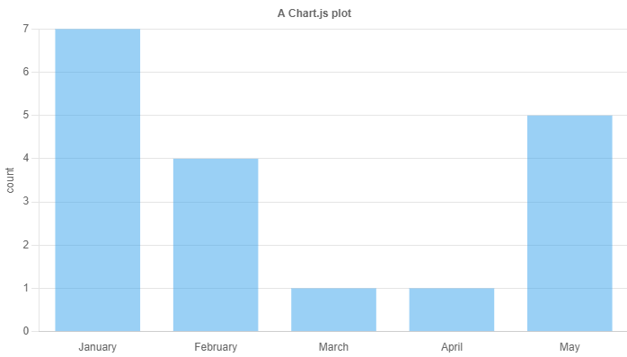
If you have a groups column
# includes a group column
cjs_example_data('bar', grouped = TRUE) %>%
chartjs(type = 'bar', x = letters, y = numbers, group = group)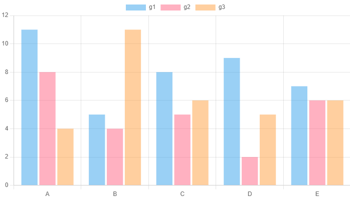
Or chain things
cjs_example_data('bar') %>%
chartjs() %>%
cjs_add_bars(x = letters, y = numbers, label = 'from source data') %>%
cjs_add_bars(x = LETTERS[1:5], y = 5:1, label = 'from vectors') %>%
cjs_add_bars(x = x1, y = y1, label = 'from given data',
data = data.frame(x1 = LETTERS[1:5], y1 = rpois(5,5))) %>%
cjs_scale_color(backgroundColors = c('#181E20', '#045C94','#FFBB1C'))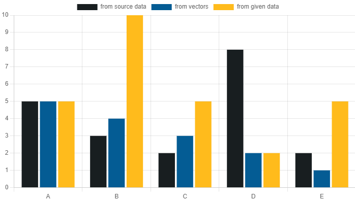
Scatter plots
cjs_example_data('scatter') %>%
chartjs(type = 'scatter', x = x_numbers, y = y_numbers) %>%
# fix documentation of these
cjs_scale_cartesian(id = 'y', title.text = 'Numbers on Y',
min = -0.2, max = 1.2) %>%
cjs_scale_cartesian(id = 'x', title.text = 'Numbers on X',
min = -0.2, max = 1.2)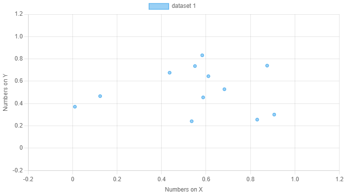
cjs_example_data('scatter') %>%
chartjs() %>%
cjs_add_points(x = x_numbers, y = y_numbers, label = 'a') %>%
cjs_add_points(x = runif(12), y = runif(12), label = 'b') %>%
cjs_add_points(x = x1, y = y1, label = 'c', data = data.frame(x1 = runif(12), y1 = runif(12))) %>%
cjs_scale_color(backgroundColors = c(a = '#181E20', b = '#045C94', c = '#FFBB1C'), match_background_and_border = T)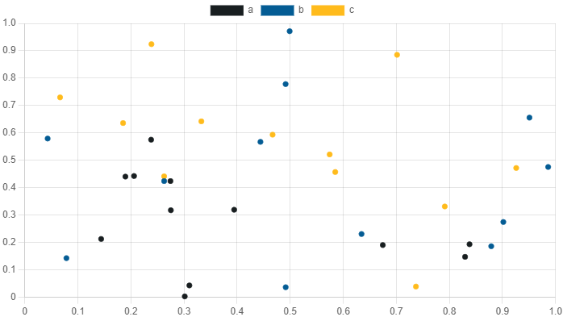
Doughnut and pie charts
cjs_example_data('doughnut_pie') %>%
chartjs() %>%
cjs_add_doughnut_pie(type = 'doughnut', x = letters, y = numbers)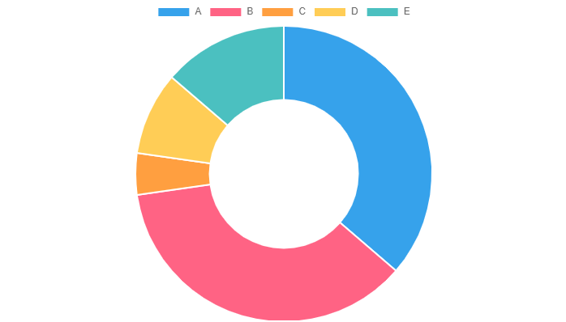
cjs_example_data('doughnut_pie') %>%
chartjs() %>%
cjs_add_doughnut_pie(type = 'pie', x = letters, y = numbers)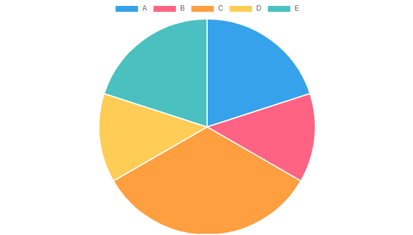
Tool tips
Using text literals in cjs_tooltip()
chartjs() %>%
cjs_add_bars(x = letters, y = numbers, label = 'Data 1', data = cjs_example_data('bar')) %>%
cjs_add_bars(x = letters, y = numbers, label = 'Data 2', data = cjs_example_data('bar')) %>%
cjs_tooltip(label = 'x value: ${x}, y value: ${y}',
title = 'Dataset: ${label}',
footer = 'same for all')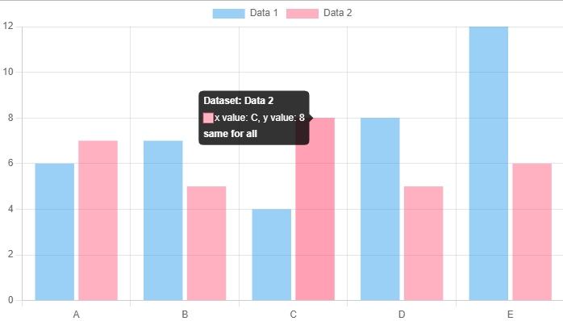
What are shown on the in the tool tip using cjs_interaction_mode()
cjs_example_data('bar', grouped = TRUE, shuffle = TRUE) %>%
chartjs(type = 'bar', x = letters, y = numbers, group = group) %>%
cjs_interaction_mode('index') %>%
cjs_tooltip(title = 'All data in ${x}')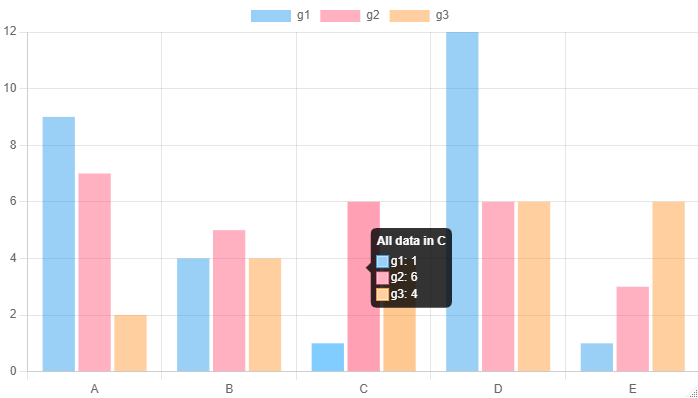